library(dplyr)
library(ggplot2)
library(Synth)
library(SCtools)
library(foreign)12 Sünteetilise võrdlusobjekti meetod
12.1 Taust
Selles peatükis käsitleme sünteetilise võrdlusobjekti meetodit (synthetic control method - SCM), tõlgitud eesti keelde otse ka kui sünteetilise kontrolli meetod.
See on välja töötatud olukordadeks, kus meid huvitab ühe konkreetse objekti – näiteks riigi, osariigi või linna – kokkupuude mingi poliitika või sündmusega ning soovime hinnata selle mõju. Erinevalt klassikalisest erinevuste-vahe (dif-dif) lähenemisest, kus on palju meetmes osalejaid ja kontrollüksusi, on sünteetilise võrdlusobjekti meetodi fookuses olukord, kus on vaid üks meetmes osalev objekt ja piiratud arv sobivaid võrdlusobjekte.
Meetodi vajadus tuleb tavaliselt makrotasemel mõju hindamise vajadusest. Näiteks, mis oli Saksamaa taasühinemise mõju Lääne-Saksamaa majanduskasvule; milline oli California osariigi ulatusliku suitsetamise vastase programmi mõju suitsetamisele; kuidas mõjutas Eesti kogumispensioni vabatahtlikuks muutmine majapidamiste tarbimist ja säästmist.
Nendele küsimustele vastamiseks ei piisa sageli üksiku võrdlusriigi või -regiooni valimisest, näiteks võrdleme Eestit Lätiga, sest subjektiivne valik võib kallutada tulemusi. Näiteks, miks mitte võrrelda Eestit Leeduga või Soomega.
Sünteetilise võrdlusobjekti meetod pakub süsteemse viisi sellise võrdlusobjekti konstrueerimiseks.
12.2 Taust ja rakenduste näited
Empiirilises kirjanduses seostatakse sünteetilise võrdlusobjekti meetodit eelkõige Alberto Abadie ja kaasautorite töödega. Esimene tuntud rakendus on Abadie ja Gardeazabal (2003), kus hinnatakse Hispaania Baskimaa provintsi sõjalise konflikti mõju majanduskasvule võrreldes Baskimaad sünteetiliselt konstrueeritud piirkonnaga, mis on kaalutud kombinatsioon Hispaania teistest provintsidest. Järgmine oluline näide on Abadie, Diamond ja Hainmueller (2010) artikkel, kus analüüsiti California suitsetamise piiramise programmi mõjude võrreldes California osariiki sünteetilise võrdlusobjektiga, mis koosnes teiste osariikide kaalutud keskmisest. Viimaks võib välja tuua Abadie, Diamond ja Hainmueller (2014) Saksamaa taasühinemise mõju analüüsi, kus konstrueeriti Lääne-Saksamaale võrdluseks OECD riikide sünteetilise kombinatsioon.
Eestis on meetodit kasutatud näiteks Centari 2023. aasta analüüsis, kus hinnati lapsehoiu ja alushariduse projektide mõju koolieelsetes lasteasutustes käivate laste osakaalule ja naiste tööhõivele, moodustades sekkumispiirkondadele sobivad sünteetilised kontrollpiirkonnad. Vt nende raporti lisa 5 ja 6: “Sünteetilise kontrollgrupi meetodi tulemused: lapsehoiu ja alushariduse projektide mõju koolieelsetes lasteasutustes käivate laste osakaalule ja naiste tööhõivele” (link).
Samuti kasutab Meriküll (2025) sünteetilist dif-dif lähenemist (seda vaatame põgusalt peatüki lisas), et hinnata, kuidas kohustusliku kogumispensioni (II samba) vabatahtlikuks muutmine mõjutas Eesti majapidamiste finantskäitumist ja inflatsiooni, võrreldes Eestit riikidega, kus sellist reformi ei olnud. (“The impact of early pension withdrawals on household finances and inflation“ (link).
Ülaltoodud näited illustreerivad, et sünteetilise kontrolli meetod on kasulik just siis, kui mõjutatud üksusi on vähe ja me soovime vältida ühe võrdlusriigi või -piirkonna ad hoc valikut.
Seade ja tähistused
Olgu meil \(J + 1\) objekti: üks uuritav objekt \(j = 1\), näiteks Lääne-Saksamaa või Eesti, ning \(J\) potentsiaalset võrdlusobjekti (niinimetatud doonorgrupp), näiteks kõik teised Euroopa riigid.
Ajalist dimensiooni tähistame \(t = 1, \dots, T\), kus sekkumine toimub alates ajast \(T_0 + 1\). Perioodid \(t \leq T_0\) on seega sekkumiseelsed, perioodid \(t > T_0\) sekkumisjärgsed.
Olgu \(Y_{it}\) objekt \(i\) tegelik tulemusmuutuja (näiteks SKP inimese kohta) perioodil \(t\). Meid huvitab sekkumise mõju uuritavale üksusele \(j = 1\), mida defineerime kui vahe tegeliku tulemuse ja võrdlusseisundi tulemuse vahel peale sekkumist:
\[ \alpha_{1t} = Y_{1t}^{I} - Y_{1t}^{N}, \quad t > T_0, \]
kus \(Y_{1t}^{I}\) on tulemus sekkumisega (vaadeldav) ning \(Y_{1t}^{N}\) oleks tulemus ilma sekkumiseta (võrdlusseisund), mida me ei näe.
Sünteetilise kontrolli idee seisneb selles, et võrdlusseisundi aegrida \(Y_{1t}^{N}\) konstrueeritakse võrdlusobjektide kaalutud keskmisena:
\[ Y_{1t}^{N} \approx \sum_{j=2}^{J+1} w_j Y_{jt}, \quad t = 1, \dots, T, \]
kus kaalud \(w_j \geq 0\) ja \(\sum_{j=2}^{J+1} w_j = 1\).
Need kaalud määravad „sünteetilise võrdlusobjekti” ehk hüpoteetilise objekti, mis on kombinatsioon olemasolevatest võrdlusüksustest ja mille sekkumiseelse dünaamika soovime sobitada uuritava objektiga võimalikult täpselt. Sellisel juhul on mõju hinnang peale meedet ehk ajapunktis \(t > T_0\):
\[ \hat{\alpha}_{1t} = Y_{1t} - \sum_{j=2}^{J+1} \hat{w}_j Y_{jt}. \]
Graafiliselt saame võrrelda uuritava objekti tegelikku aegrida ning sünteetilise kontrolli aegrida, ning sekkumisejärgne erinevus nende vahel annab visuaalse ja kvantitatiivse hinnangu sekkumise mõju kohta.
Näiteks võime leida, et Eesti jaoks saame leibkondade säästmismäära enne kogumispensioni vabaks laskmist jäljendada, kui võtame Läti kaaluga 0.8 ja Leedu kaaluga 0.2. Seejärel kasutame samade kaaludega säästmimäärasid hindamaks, mis oleks juhtunud Eestiga, kui Eesti ei oleks kogumispensioni vabatahtlikuks teinud.
Selgitavad tunnused ja kaalud
Kaalude valimisel riikidele soovime võimalikult täpselt jäljendada sekkumiseelsel perioodil uuritava tunnuse \(Y\) dünaamikat, nt SKP inimese kohta Lääne-Saksamaal enne Saksamaa taasühinemist. Lisaks uuritavale muutujale \(Y\) kasutab meetod sobitamiseks aga ka teisi selgitavaid tunnuseid ja nende sekkumiseelseid tulemusi. Olgu \(X_1\) vektor uuritava objekti tunnustest (nt rahvastiku vanusstruktuur, rahvastiku haridus, majanduse struktuur) ja sekkumiseelsete tulemuste kokkuvõtlikest näitajatest (näiteks SKP inimese kohta keskmised väärtused enne Saksamaa ühinemist), ning \(X_0\) maatriks samade tunnuste kohta kontrollobjektide jaoks:
\[ X_1 = (x_{11}, \dots, x_{1K})', \quad X_0 = \begin{pmatrix} x_{21} & \dots & x_{J+1,1} \\ \vdots & \ddots & \vdots \\ x_{2K} & \dots & x_{J+1,K} \end{pmatrix} \]
Lisaks kaaludele objektidele \(w = (w_2, \dots, w_{J+1})'\) peame leidma ka kaalud, mis arvestaks, millised tunnused on meie jaoks olulisemad. Seda kaaluvektorit (või vajadusel diagonaalmaatriksit) tähistame tähisega \(V\), kus elemendid \(v_m\) näitavad suhtelist olulisust tunnuste jaoks.
Intuitsioon on see, et mõni tunnus võib olla suurema tähtsusega tulevase tulemuse väärtuse kohta ning seetõttu saab suurema kaalu, kui riikide kaale leiame.
Riikide kaalud valitakse nii, et sobitada uuritava objekti tunnused võimalikult hästi sünteetilisele võrdlusobjektile enne meedet, minimeerides erinevuse tegeliku väärtuse ja kaalutud väärtuse vahel.
Selle võime kirjutada:
\[ \min_{w} \sum_{m=1}^{K} v_m (X_{1m} - \sum_{j=2}^{J+1} w_j X_{jm})^2 \]
võttes arvesse tingimusi \(w_j \geq 0\) ja \(\sum_j w_j = 1\) ning \(v_m \geq 0\) ja \(\sum_j v_m = 1\)
Saame kirjutada selle ka maatrikskujul, kus \(V\) on diagonaalmaatriks, kus elementideks on \(v_m\):
\[ \min_{w} (X_1 - X_0 w)' V (X_1 - X_0 w) \]
Selle avaldise miinimumväärtus on niinimetatud W-kaotus (W-loss), mis näitab, kui hästi suudame etteantud \(V\) korral leida kaalude vektori \(w\) riikidele nii, et erinevus selgitavates tunnustes oleks võimalikult väike.
Seega on meil seega kaks kaalude vektorit: \(v_m\) on tunnustele ja see peegeldab eri tunnuste rolli Y prognoosimisel, ja \(w_j\) on objektidele, mis leiab kõige sarnasemad objektid.
Lõplike kaalude väärtuse leidmiseks on erinevaid võimalusi. Üks levinuim lähenemine on minimeerida tegeliku ja prognoositud tulemusnäitaja erinevust sekkumiseelsel perioodil. Kasutame kas prognoosivigade ruutude keskmist (Mean Square Prediction Error - MSPE):
\[MSPE= \frac{1}{T_0} \sum_{t=1}^{T_{0}} {\left( Y_{1t}−\sum_{j=2}^{J+1} w_{j}^{\ast} \left(V \right)Y_{jt}\right)}^{2} \]
või ruutjuurt sellest (Root Mean Square Prediction Error - RMSPE):
\[ RMSPE = \sqrt{\frac{1}{T_0} \sum_{t=1}^{T_0} \left( Y_{it} - \sum_{j=2}^{J+1} w_{j}^{\ast} \left( V \right)Y_{jt}\right)^{2}}\]
Kaalude leidmine toimub iteratiivselt ehk samm-sammuliselt. Esmalt valime \(V\) algväärtused. Seejärel leiame optimaalse kaalude vektori \(w\) minimeerides eelnevalt toodud avaldist ehk iga etteantud \(V\) korral leiame \(w_{j}^{\ast}\). Proovime erinevaid \(V\) väärtusi ja valime välja sellise \(V\) ja \(w_{j}^{\ast}\) komplekti, mis kõige paremini lähendab tegelikku uuritava objekti väljundtunnuse aegrida minevikus.
Ri pakett Synth pakub erinevaid algoritme \(V\) leidmiseks. Tundlikkuse analüüsimiseks võib proovida läbi erinevad algoritmid ja võrrelda saadud tulemusi.
12.3 Meetodi eeldused
Sünteetilise kontrolli meetodi korrektne tõlgendamine põhineb mitmel olulisel eeldusegrupil.
Ei ole vastastikmõjusid (SUTVA)
Esimene eeldus puudutab vastastikmõjude puudumist. Eeldame, et sekkumine uuritava objekti puhul ei mõjuta otseselt kontrollobjektide tulemusi. Näiteks, Baskimaa konflikti analüüsis eeldatakse, et konflikt ei mõjuta teiste Hispaania regioonide majanduskasvu. Näiteks, Eesti kogumispensioni vabakslaskmine ei mõjuta naaberriikide majandusnäitajaid. See on sarnane SUTVA eeldusest tuntud nõudega, et ühe üksuse potentsiaalne tulemus ei mõjuta teise üksuse potentsiaalset tulemust.
Kui see eeldus ei kehti ja sekkumine „lekib” võrdlusüksustesse, siis sünteetiline kontroll ei esinda enam korralikult võrdlusseisundit ilma sekkumiseta. Praktikas püüame jätta välja need objektid võrdlusest, mis võiks olla samuti mõjutatud. Näiteks võrdleme Eestit teiste Kesk- ja Ida-Euroopa riikidega, aga Läti ja Leedu jätame igaks juhuks võrdlusrühmast välja.
Sama struktuur ja šokid
Teine oluline eeldus puudutab dünaamikat sekkumiseelsel perioodil. Nõuame, et võrdlusrühma tulemusi mõjutab sama struktuurne protsess, mis uuritavat üksust, ning nii uuritav objekt kui ka kontrollüksused alluvad sarnastele šokkidele. See on analoog paralleelsete trendide eeldusele erinevuste vahe (dif-dif) meetodi puhul, kuid sünteetilise kontrolli korral võtame seda arvesse leides eelnevalt sobilikud objektid.
Mida rohkem on sekkumiseelseid perioode, seda paremini on võimalik kontrollida nii vaadeldavate kui ka mittevaadeldavate tegurite mõju. Kui suudame sekkumiseelsel perioodil väga täpselt sobitada nii selgitavad tunnused \(X\) kui ka väljundtunnuse \(Y_t\) dünaamika, siis on usutav, et sama seos püsiks ka sekkumisjärgsel perioodil ilma sekkumiseta.
12.4 Platseeboanalüüs ja tulemuste robustsus
Selleks, et veenda lugejat, et leitud tulemused ei ole juhuslikud, kasutatakse sünteetilise kontrolli kontekstis sageli platseeboanalüüse ja RMSPE-suhete testi.
Platseebod kontrollüksustele
Platseeboanalüüsi põhiidee seisneb selles, et rakendame sünteetilise kontrolli meetodit mitte ainult uuritavale üksusele, vaid ka igale doonorrühma üksusele. Iga võrdlusobjekti jaoks konstrueerime enda sünteetilise versiooni, kasutades ülejäänud üksusi doonoritena, ning „teeskleme”, et sekkumine toimus samal ajal ka selle üksuse jaoks.
Seejärel võrdleme iga objekti puhul sekkumisjärgsel perioodil tema tegelikku tulemust tema sünteetilise võrdlusobjekti tulemusega. Et tegelikult mingit meedet ei olnud, siis peaks nende kahe aegrea vahe jääma väikeseks ning olema sekkumiseelse perioodiga sarnane.
See loob niiöelda nulljaotuse ehk olukorra, mis toimuks objektidega ilma sekkumiseta. Sellega saame võrrelda meid huvitava üksuse kõrvalekallet. Kui meie objekt on sarnane kõigi teistega, siis ilmselt mõju ei ole. Kui ta on väga erinev, siis viitab see meetme mõjule.
Visuaalselt saame joonistada kõikide üksuste jaoks erinevuse nende tegelikust väärtusest võrreldes sünteetilise kontrolliga. Kui käsitletava üksuse kõrvalekalle on selgelt suurem kui enamikul platseebodel, viitab see tõsiseltvõetavale sekkumise efektile.
RMSPE suhted ja p-väärtus
Lisaks visuaalsele esitamisele, saab platseeboanalüüsi kvantifitseerida ruutkeskmiste prognoosivigade suhete kaudu. Olgu uuritava või platseebo üksuse korral erinevus tegeliku ja tema sünteetilise objekti väärtuste vahel enne meedet (pre) ja pärast meedet (post)järgmine:
\[ \text{RMSPE}\_{\text{pre}}_j = \sqrt{\frac{1}{T_0} \sum_{t=1}^{T_0} (Y_{jt} - Y_{jt}^{\text{SC}})^2}, \]
\[ \text{RMSPE}\_{\text{post}}_j = \sqrt{\frac{1}{T - T_0} \sum_{t=T_0+1}^{T} (Y_{jt} - Y_{jt}^{\text{SC}})^2}, \]
kus \(Y_{jt}^{\text{SC}}\) on sünteetilise kontrolli väärtus \(j\)-nda objekti jaoks. Seejärel defineerime suhte iga objekti jaoks:
\[ R_j = \frac{\text{RMSPE\_}{\text{post}_j}} {\text{RMSPE\_}{\text{pre}_j}} \]
Suhe \(R_j\) on tavaliselt alati suurem kui 1, sest sekkumisjärgne sobivus ei saa olla nii hea, kui sekkumiseelne sobivus, sest sekkumiseelsete andmete järgi leiamegi võrdlusbojektid. Mida suurem on see suhtarv, seda suurem on sekkumise eeldatav mõju, sest aegrida peale sekkumist erinev oluliselt sünteetilise võrdlusobjekti aegreast.
Arvutame selle suhte nii uuritava üksuse kui ka kõikide platseeboüksuste jaoks ning järjestame need kahanevas järjekorras. Mida kõrgemal kohal on meie üksus, seda eripärasem ta on. Uuritava üksuse suhteline positsioon selles jaotuses annabki täpse p-väärtuse:
\[ p = \frac{\text{Meie objekti järjekorra number}}{\text{kõigi üksuste arv}} \]
Näiteks, Saksamaa ühinemise analüüsis oli vaadeldud üksuse (Saksamaa) suhe kõige suurem kõigi riikide seas, mis andis p-väärtuseks ligikaudu \(1/17 \approx 0{,}058\). See tähendab, et vaid ühel juhul 17-st võiksime oodata vähemalt sama suurt kõrvalekallet, kui mõju tegelikult ei oleks.
12.5 Tasakaalu kontroll
Kui kaalud \(w\) ja \(V\) on õigesti valitud, saavutatakse tasakaal nii selgitavate tunnuste kui ka sekkumiseelse dünaamika osas. See tähendab, et sünteetiline kontroll on iga üksiku selgitava tunnuse osas uuritavale üksusele võimalikult sarnane ning et ka tulemusmuutuja sekkumiseelne aegrida on uuritava üksuse ja sünteetilise kontrolli vahel võimalikult ühtiv.
Praktilises töös kontrollitakse tasakaalu tavaliselt nii tabelite kui ka graafikute abil olulisemate tunnuste jaoks. Tunnuste puhul võrreldakse uuritava üksuse ja sünteetilise kontrolli keskmisi väärtusi; tulemusmuutuja puhul vaadeldakse sekkumiseelse perioodi trajektoore. Hea tasakaal on eelduseks usutavatele mõjuhinnangutele.
Sünteetilise kontrolli meetodit on viimastel aastatel oluliselt edasi arendatud. Mõned olulisemad suunad on järgmised. Lisas on toodud ülevaade Arkhangelsky jt (2021), mis kombineerib Dif-Dif meetodi sünteetilise võrdlusobjekti meetodiga. Samuti tutvustatakse Ben-Michaeli jt (2021) Augmented Synthetic Control Method (ASCM) meetodit, mis kombineerib klassikalise sünteetilise kontrolli meetodi regressioonipõhiste parandustega.
12.6 Ri paketid
R-keskkonnas saab sünteetilise kontrolli rakendamiseks kasutada pakette Synth ja SCtools. Lisaks on uuemad paketid, mis täiendavad augmenteeritud lähenemisi, nt synthdid, mis modifitseerib dif-dif analüüsi kaaludega, ja augsynth, mis modifitseerib sünteetilise kontrolli lähenemist regressioonimudeliga.
Me kasutame alljärgnevas näites pakette Synth ja SCtools . Vt https://cran.r-project.org/web/packages/Synth/index.html ja https://cran.r-project.org/web/packages/SCtools/index.html
Vt ka Abadie A, Diamond A, Hainmueller J (2011). “Synth: An R Package for Synthetic Control Methods in Comparative Case Studies.” Journal of Statistical Software, 42(13), 1–17. https://www.jstatsoft.org/v42/i13/
12.7 Näide - Saksamaa taasühinemine
Alljärgneva näite andmed on pärit artiklist A. Abadie, A. Diamond, and J. Hainmueller. 2014. Comparative Politics and the Synthetic Control Method American Journal of Political Science. (link)
Selles näites kasutame sünteetilise võrdlusobjekti meetodit, et hinnata 1990. aasta Saksamaa taasühinemise mõju Lääne-Saksamaa majandusele. Tegu oli ühe olulisema poliitilise sündmusega sõjajärgses Euroopas. Pärast Berliini müüri langemist 9. novembril 1989 ühinesid Saksa Demokraatlik Vabariik (nn Ida-Saksamaa) ja Saksamaa Liitvabariik (nn Lääne-Saksamaa) ametlikult 3. oktoobril 1990. Sel ajal oli Lääne-Saksamaa SKP elaniku kohta ligikaudu kolm korda kõrgem kui Ida-Saksamaal.
Meid huvitab, mis oli ühinemise mõju Lääne-Saksamaa SKP-le.
Laeme andmed:
#Muutke ära vajadusel andmete asukoht
datapath = "http://kodu.ut.ee/~avork/files/oppetoo/pohjustagajarg/"
#Lugege sisse andmefail
d <- read.dta(file = paste0(datapath, "repgermany.dta"))Kasutame OECD riikide paneelandmeid perioodi 1960–2003 kohta. Saksamaa taasühinemine toimus 1990. aastal, mis annab 30-aastase sekkumiseelse perioodi (1960-1990). Andmed lõppevad 2003. aastal. Kigikaudu kümneaastast perioodi pärast taasühinemist võib pidada mõistlikuks piiriks. Sünteetiline Lääne-Saksamaa konstrueeritakse doonorriikide hulgast valitud kaalutud keskmisena. Meie doonorriikide hulk on 16 OECD liikmesriiki.
Pangem tähele, et meetme algusaja võiks fikseerida kas 1989, 1990 või 1991, sõltuvalt sellest, millal me eeldame, et algas mõju majandusele. Me alustame 1991. aastast.
Uuritav tunnus on riigi SKP inimese kohta (PPP) järgi korrigeeritud ja mõõdetud 2002. aasta USA dollarites. Teised taasühinemiseelsed tunnused on järgmised: SKP elaniku kohta, inflatsioonimäär, tööstuse osakaal loodud lisandväärtusest, investeeringute määr, täisealise elanikkonna haridustase ja kaubanduse avatuse mõõdik.
Peamised tunnused:
- index : riigi number
- country : riigi nimi
- year : aasta
- gdp : SKP inimese kohta
- infrate : inflatsioon
- trade : kaubanduse avatus
- schooling : haridustase
- industry : tööstuse osakaal
- invest60, 70, 80 - kodumaiste investeeringute suhe SKPsse, 5-aastased keskmised; lisaks üks väärtus 1980 aasta kohta.
head(d) index country year gdp infrate trade schooling invest60 invest70
1 1 USA 1960 2879 NA 9.693181 43.8 NA NA
2 1 USA 1961 2929 1.075182 9.444654 NA NA NA
3 1 USA 1962 3103 1.116071 9.429324 NA NA NA
4 1 USA 1963 3227 1.214128 9.470706 NA NA NA
5 1 USA 1964 3420 1.308615 9.725879 NA NA NA
6 1 USA 1965 3667 1.668461 9.730347 43.8 NA NA
invest80 industry
1 NA NA
2 NA NA
3 NA NA
4 NA NA
5 NA NA
6 NA NATeeme joonise SKP inimese kohta eri riikides:
#
ggplot(d, aes(x = year, y = gdp, color = country)) +
geom_line(aes(linetype = (index != 7))) +
geom_line(
data = d |> filter(index == 7),
color = "black",
linewidth = 1.3,
linetype = "solid"
) +
guides(linetype = "none") +
theme_light() +
labs(x = "", y = "GDP per capita")
Vaadake soovi korral ka teisi selgitavaid muutujaid. Asendage gdp teiste näitajatega. Vajadusel lisage geom_point() kui vaatlused on vaid mõne aasta kohta.
Näiteks hariduse kohta:
d |>
ggplot(aes(x = year, y = schooling, group = country, color = country)) +
geom_line(aes(linetype=(index!=7))) +
geom_point() +
guides(linetype = "none") +
theme_light()Warning: Removed 61 rows containing missing values or values outside the scale range
(`geom_line()`).Warning: Removed 597 rows containing missing values or values outside the scale range
(`geom_point()`).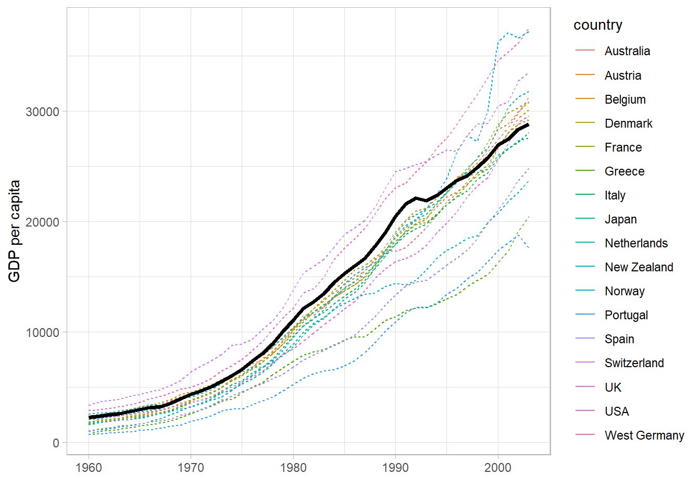
MärkusKõrvalepõige - käsitsi
Enne Ri pakettide kasutamist, võite harjutada sünteetilise võrdlusobjekti tegemist ja käsitsi. Võtame näiteks kolm võrdlusriiki ja määrame neile ise kaalud. Vaadakem esmalt üle, mis riigid on andmetes.
# Millised riigid ja indeksid on andmetes?
riigid <- d |>
distinct(index, country) |>
arrange(index)
print(riigid) index country
1 1 USA
45 2 UK
89 3 Austria
133 4 Belgium
177 5 Denmark
221 6 France
265 7 West Germany
309 8 Italy
353 9 Netherlands
397 10 Norway
441 12 Switzerland
485 14 Japan
529 16 Greece
573 18 Portugal
617 19 Spain
661 20 Australia
705 21 New ZealandValime kolm riiki ja määrame kaalud.
#
# Näites on kasutatud indekseid 1, 2 ja 3.
# Saad need asendada teiste riikide indeksitega.
#
# Ära vali indeksit 7, sest see on Lääne-Saksamaa.
valitud_riigid <- data.frame(
index = c(1, 2, 3),
kaal = c(0.40, 0.35, 0.25)
)
# Vaatame valitud riikide nimesid ja kaalusid
valitud_riigid |>
left_join(riigid, by = "index") |>
select(index, country, kaal) |>
print() index country kaal
1 1 USA 0.40
2 2 UK 0.35
3 3 Austria 0.25Arvuta sünteetilise võrdusobjekti SKP
# Igal aastal:
#
# sünteetiline SKP =
# esimese riigi SKP × esimese riigi kaal +
# teise riigi SKP × teise riigi kaal +
# kolmanda riigi SKP × kolmanda riigi kaal
synt_andmed <- d |>
#jätame alles andmetest d vaid need index väärtused, mis on mõlemas
inner_join(valitud_riigid, by = "index") |>
select(year, index, country, gdp, kaal)
#Teeme sünteetilise kontrolli
synt_kontroll <- synt_andmed |>
group_by(year) |>
summarise(
#Sünteetilise kontrolli SKP
synt_skp = sum(gdp * kaal),
.groups = "drop"
)Ühendame Saksamaa andmetega
# Lääne-Saksamaa SKP
saksamaa <- d |>
filter(index == 7) |>
select(year, saksamaa_skp = gdp)Paneme Lääne-Saksamaa ja sünteetilise kontrolli kokku
vordlus <- saksamaa |>
inner_join(synt_kontroll, by = "year") |>
mutate(
vahe = saksamaa_skp - synt_skp,
ruutviga = vahe^2
) |>
arrange(year)
# Vaatame esimesi aastaid
head(vordlus) year saksamaa_skp synt_skp vahe ruutviga
1 1960 2284 2355.90 -71.90 5169.6100
2 1961 2388 2421.95 -33.95 1152.6025
3 1962 2527 2532.05 -5.05 25.5025
4 1963 2610 2644.40 -34.40 1183.3600
5 1964 2806 2810.90 -4.90 24.0100
6 1965 3005 2981.80 23.20 538.2400Arvutame MSPE ja RMSPE aastatel 1981-1990
# RMSPE = root mean squared prediction error
# = ruutkeskmine viga
#
# Iga aasta kohta arvutame:
# (Lääne-Saksamaa SKP - sünteetilise kontrolli SKP)^2
#
# Seejärel võtame nende ruutude keskmise.
minevik <- vordlus |>
filter(year >= 1981, year <= 1990)
# Keskmine ruutviga
MSPE <- mean(minevik$ruutviga)
# Ruutkeskmine viga on väljendatud SKPga samades ühikutes
RMSPE <- sqrt(MSPE)
cat("MSPE aastatel 1981–1990:", round(MSPE, 2), "\n")MSPE aastatel 1981–1990: 250089.2 cat("RMSPE aastatel 1981–1990:", round(RMSPE, 2), "\n")RMSPE aastatel 1981–1990: 500.09 Teeme joonise
# 6. SAKSAMAA JA SÜNTEETILISE KONTROLLI JOONIS ---------------
ggplot(vordlus, aes(x = year)) +
geom_line(
aes(y = saksamaa_skp, color = "Lääne-Saksamaa"),
linewidth = 1.2
) +
geom_line(
aes(y = synt_skp, color = "Sünteetiline Lääne-Saksamaa"),
linewidth = 1.2,
linetype = "dashed"
) +
geom_vline(
xintercept = 1990,
linetype = "dotted",
color = "grey40"
) +
scale_color_manual(
values = c(
"Lääne-Saksamaa" = "black",
"Sünteetiline Lääne-Saksamaa" = "red"
)
) +
theme_light() +
theme(legend.position = "bottom") +
labs(
title = "Lääne-Saksamaa ja sünteetiline kontroll",
subtitle = paste0(
"Valitud riikide kaalutud keskmine; ",
"RMSPE 1981–1990 = ", round(RMSPE, 0)
),
x = "Aasta",
y = "SKP elaniku kohta",
color = ""
)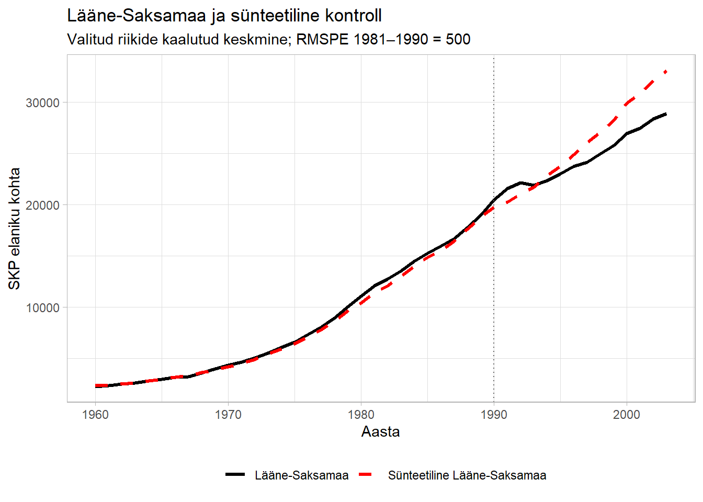
Mõjuhinnang ongi joonte erinevus
ggplot(vordlus, aes(x = year)) +
geom_line(
aes(y = vahe),
linewidth = 1.2
) +
geom_vline(
xintercept = 1990,
linetype = "dotted",
color = "grey40"
) +
geom_hline(
yintercept = 0,
linetype = "dotted",
color = "grey40"
) +
theme_light() +
labs(
title = "Erinevus Lääne-Saksamaa ja sünteetilise kontrolli vahel",
x = "Aasta",
y = "SKP elaniku kohta" )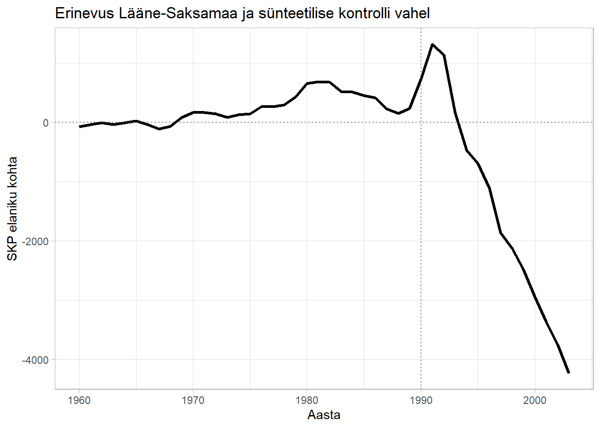
Automatiseeritud töövoog
Tavaline töövoog on järgmine:
- Paketist
Synthkäsk dataprep() - valmistab ette andmed - Paketist
Synthsynth() - leiab kaalud, teeb sünteetilise võrdlusobjekt - Paketist
Synthsynth.tab(), gaps.plot(), and path.plot() - näitab tulemusi - Paketist
SCtoolskäskgenerate.placebos- teeb platseebod analüüsiks - Paketist
SCtoolskäsud plot_placebos, mspe.plot, mspe.test - kuvab platseeboanalüüsi tulemused ja arvutab täpse p-väärtuse
Andmete ettevalmistamine on väga paindlik, aga selle võrra ka keerukas süntaksi mõttes.
dataprep.out <-
dataprep(
foo = d,
predictors = c("gdp","trade","infrate"), #tavalised prognoosijad, võetakse nende keskmine
dependent = "gdp", #y tunnus
unit.variable = 1, #id muutuja
time.variable = 3, #aja muutuja
special.predictors = list( #erilised prognoosijad, nendel võivad olla teised perioodid
list("industry" ,1981:1990, c("mean")),
list("schooling",c(1980,1985), c("mean")),
list("invest80" ,1980, c("mean"))
),
treatment.identifier = 7, #index = 7 Lääne-Saksamaa
controls.identifier = unique(d$index)[-7], #kõik ülejäänud
time.predictors.prior = 1981:1990, #ajaperiood tavalistele prognoosijatele
time.optimize.ssr = 1981:1990, #ajaperiood, et minimeerida erinevust Y tunnuses enne meedet
unit.names.variable = 2, #nimed
time.plot = 1960:2003 #joonisele periood
)
Missing data: treated unit; special predictor: special.industry.1981.1990 ; for period: 1990
We ignore (na.rm = TRUE) all missing values for predictors.op.Vaata üle objekt dataprep.out, mille me salvestasime. See loob lihtsalt kõik vajalikud andmemaatriksid ja vektorid.
str(dataprep.out, max.level = 1)List of 8
$ X0 : num [1:6, 1:16] 18029.8 19.2 4.74 30.6 60.15 ...
..- attr(*, "dimnames")=List of 2
$ X1 : num [1:6, 1] 15808.9 56.78 2.59 34.54 55.5 ...
..- attr(*, "dimnames")=List of 2
$ Z0 : int [1:10, 1:16] 13533 13940 15008 16549 17600 18439 19407 20711 22047 23064 ...
..- attr(*, "dimnames")=List of 2
$ Z1 : int [1:10, 1] 12115 12761 13519 14481 15291 15998 16679 17786 18994 20465
..- attr(*, "dimnames")=List of 2
$ Y0plot : int [1:44, 1:16] 2879 2929 3103 3227 3420 3667 3974 4154 4494 4805 ...
..- attr(*, "dimnames")=List of 2
$ Y1plot : int [1:44, 1] 2284 2388 2527 2610 2806 3005 3168 3241 3571 3998 ...
..- attr(*, "dimnames")=List of 2
$ names.and.numbers:'data.frame': 17 obs. of 2 variables:
$ tag :List of 13X0 – kontrollüksuste ennustajate maatriks. Tavaliselt on need aastate keskmised, vastavalt määratletule. Iga veerg on üks piirkond.
dataprep.out$X0 1 2 3 4
gdp 18029.800000 12664.000000 14817.000000 14347.30000
trade 19.199796 52.373944 74.630803 133.61179
infrate 4.740062 6.585358 3.529565 4.58030
special.industry.1981.1990 30.595133 39.061470 35.485312 33.48119
special.schooling.1980.1985 60.150002 34.300001 60.900000 32.10000
special.invest80.1980 22.375999 17.587999 26.642000 21.87600
5 6 8 9
gdp 14857.100000 14293.200000 13869.700000 14462.300000
trade 69.557355 44.736920 42.683143 106.078918
infrate 5.945661 6.368286 9.721693 2.543722
special.industry.1981.1990 27.205048 32.210452 35.912703 32.767722
special.schooling.1980.1985 42.950001 35.400000 29.750000 44.400000
special.invest80.1980 22.217999 27.236000 26.728001 21.840000
10 12 14 16
gdp 14370.200000 19282.90000 13714.800000 9438.40000
trade 74.635595 71.45849 23.042788 43.00722
infrate 7.664475 3.40692 2.058197 19.04085
special.industry.1981.1990 38.716592 31.87100 39.561175 30.26204
special.schooling.1980.1985 40.150000 53.95000 40.900002 21.70000
special.invest80.1980 31.594000 30.96400 34.986000 24.00200
18 19 20 21
gdp 7761.60000 9935.500000 14368.100000 12498.20000
trade 69.97408 39.656889 33.776868 58.87568
infrate 17.30977 9.362696 8.127678 10.87994
special.industry.1981.1990 32.52951 36.403378 32.880581 31.76784
special.schooling.1980.1985 12.15000 15.450000 47.950001 46.35000
special.invest80.1980 26.48800 24.568001 29.695999 25.52200X1 – vaadeldava üksuse andmevektor. Sama ajaperiood.
dataprep.out$X1 7
gdp 15808.900000
trade 56.777813
infrate 2.594799
special.industry.1981.1990 34.538488
special.schooling.1980.1985 55.500000
special.invest80.1980 27.017998Z0 – kontrollüksuste väljundmuutuja maatriks sekkumiseelses perioodis.
dataprep.out$Z0 1 2 3 4 5 6 8 9 10 12 14 16
1981 13533 9161 11242 11079 11106 10929 10593 11304 10548 15338 9986 7870
1982 13940 9917 12148 11827 12115 11869 11275 11784 11205 15963 10813 8204
1983 15008 10669 13048 12334 12822 12518 11812 12419 12022 16611 11346 8388
1984 16549 11336 13533 13113 13777 13145 12543 13234 13220 17710 12064 8834
1985 17600 12068 14296 13735 14698 13746 13285 13938 14354 18812 12978 9297
1986 18439 12795 14921 14292 15608 14308 13896 14613 15184 19458 13590 9525
1987 19407 13717 15549 15013 16024 14940 14688 15197 15823 20120 14425 9548
1988 20711 14864 16595 16209 16766 16040 15784 16082 16299 21334 15862 10277
1989 22047 15716 17768 17345 17418 17193 16875 17387 17043 22965 17269 11036
1990 23064 16397 19070 18526 18237 18244 17946 18665 18004 24518 18815 11405
18 19 20 21
1981 5812 7447 11513 9736
1982 6263 7957 11537 10687
1983 6479 8378 12300 11262
1984 6570 8812 13120 12141
1985 6959 9259 14019 12556
1986 7414 9744 14537 13085
1987 8126 10542 15554 13402
1988 9057 11434 16524 13569
1989 10042 12417 17255 14124
1990 10894 13365 17322 14420Ja vaadeldava üksuse puhul:
dataprep.out$Z1 7
1981 12115
1982 12761
1983 13519
1984 14481
1985 15291
1986 15998
1987 16679
1988 17786
1989 18994
1990 20465Joonistamiseks vajalikud andmed on salvestatud objektidesse Y1plot ja Y0plot.
Nüüd saame käivitada käsu synth, et leida optimaalsed kaalud, mis loovad uuritavale üksusele parima võimaliku sünteetilise kontrolli.
synth.out <- synth(dataprep.out)
X1, X0, Z1, Z0 all come directly from dataprep object.
****************
searching for synthetic control unit
****************
****************
****************
MSPE (LOSS V): 2780.803
solution.v:
0.6382063 0.000793192 0.02569357 3.5794e-06 0.005660648 0.3296428
solution.w:
0.140826 0.0008091836 0.3647215 0.001026341 0.001071105 0.000802521 0.0006526096 0.1809177 0.0006463323 0.171095 0.1346767 0.0004573153 0.0004194751 0.0005437716 0.0007120638 0.0006224255 Tulemused
Tulemuste kokkuvõtteks on kolm mugavat funktsiooni.
Kõigi tabelite (V- ja W-kaalud ning sobivus käsitletud ja sünteetilise kontrolli vahel) saamiseks kasutame käsku synth.tab().
synth.tables <- synth.tab(dataprep.res = dataprep.out,
synth.res = synth.out)
print(synth.tables)$tab.pred
Treated Synthetic Sample Mean
gdp 15808.900 15807.581 13669.381
trade 56.778 64.942 59.831
infrate 2.595 3.342 7.617
special.industry.1981.1990 34.538 34.220 33.794
special.schooling.1980.1985 55.500 53.721 38.659
special.invest80.1980 27.018 27.022 25.895
$tab.v
v.weights
gdp 0.638
trade 0.001
infrate 0.026
special.industry.1981.1990 0
special.schooling.1980.1985 0.006
special.invest80.1980 0.33
$tab.w
w.weights unit.names unit.numbers
1 0.141 USA 1
2 0.001 UK 2
3 0.365 Austria 3
4 0.001 Belgium 4
5 0.001 Denmark 5
6 0.001 France 6
8 0.001 Italy 8
9 0.181 Netherlands 9
10 0.001 Norway 10
12 0.171 Switzerland 12
14 0.135 Japan 14
16 0.000 Greece 16
18 0.000 Portugal 18
19 0.001 Spain 19
20 0.001 Australia 20
21 0.001 New Zealand 21
$tab.loss
Loss W Loss V
[1,] 0.0007521133 2780.803- tab.pred annab ennustajate väärtused käsitletud üksuse ja sünteetilise kontrolli jaoks, koos valimi keskmisega.
- tab.v annab selgitavate muutujate kaalud.
- tab.w annab piirkondade kaalud.
Pane tähele, et tab.loss sisaldab kahte väärtust:
W–kaotus, mis on seotud ennustajate $X$ erinevustega. Loss W = 0.000752 näitab tunnuste kaalutud keskmist erinevust Saksamaa ja sünteetilise kontrolli vahel. Et tunnused on erineval skaalal, siis on tunnused enne arvutust skaleeritud, st läbi jagatud nende standardhälbega. Mida rohkem tunnuseid lisame, seda suurem see tavaliselt on, sest samad piirkonnakaalud ei pruugi sobida kõigi X-de jaoks. Mida väiksem väärtus, seda paremini on uuritava objekti X-id sobitatud sünteetilise kontrolli X-idega. See tuleneb w-kaalude optimeerimisest.
V–kaotus, mis on seotud tulemusmuutuja \(Y\) sobivusega. Mida väiksem see väärtus, seda paremini kirjeldame tulemusmuutuja varasemaid väärtusi. See on käsitletud üksuse sünteetilise kontrolli sekkumiseelne keskmine ruutprognoosiviga (MSPE). See MSPE tuleneb nii \(v\)- kui \(w\)-kaalude optimeerimisest. Ruutühikut on keeruline vahetult tõlgendada, kuid võime võtta ka ruutjuure, sqrt(2780.803) = 52.7. Seega on keskmine erinevus enne meedet 52.7 USD dollarit.
Muutuja \(Y\) trajektooride kokkuvõtvate graafikute loomiseks kasutame käske path.plot() ja gaps.plot()
Taseme väärtused:
path.plot(dataprep.res = dataprep.out,synth.res = synth.out)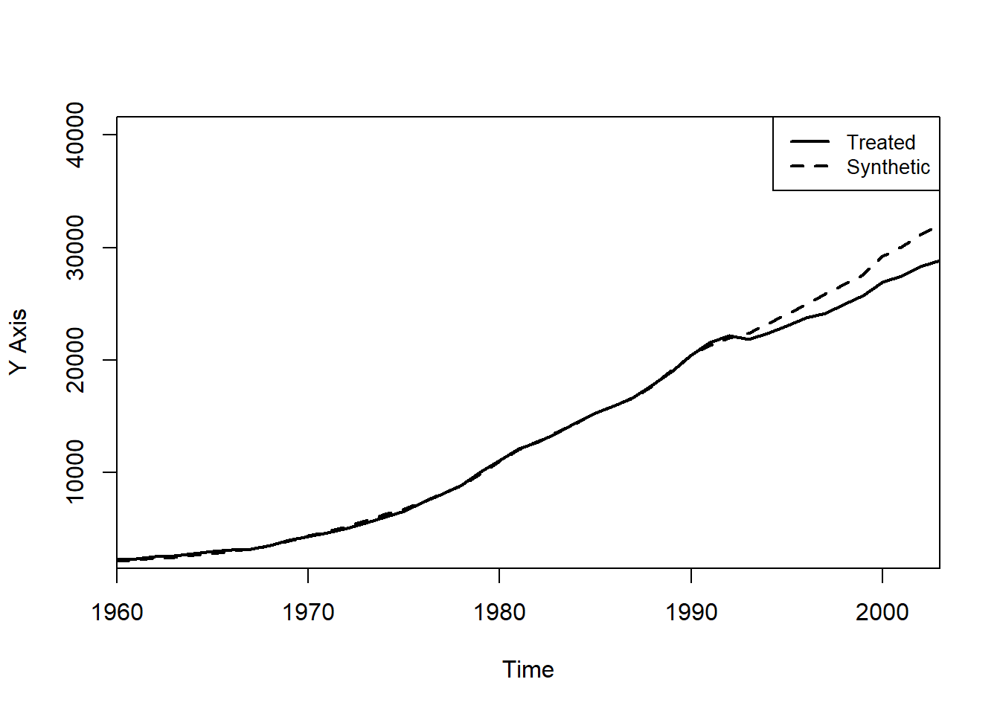
Erinevuse tegeliku ja sünteetilise võrdlusobjekti vahel.
gaps.plot(dataprep.res = dataprep.out,synth.res = synth.out)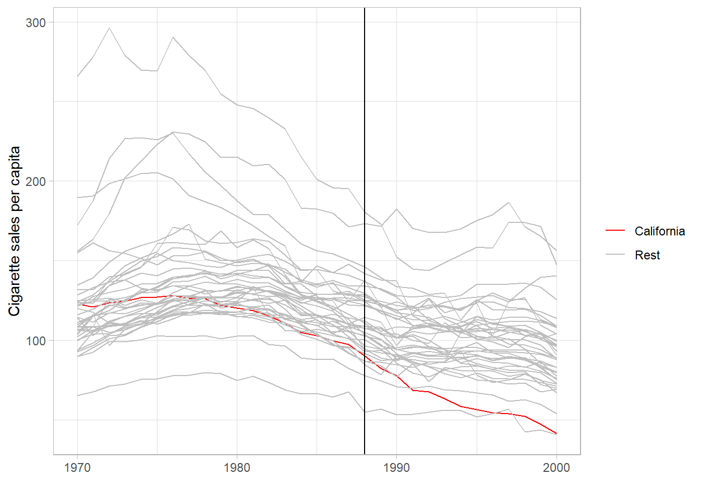
Platseebod
Platseebode genereerimiseks kasutame paketti SCtools. See kohtleb iga piirkonda kordamööda kui osalejat ja arvutab mõjud. See võtab mõnevõrra aega.
placebos <- generate.placebos(dataprep.out, synth.out, strategy = "multicore") #multicore - kiirem, kasutab paralleelarvutustPärast seda saame joonistada platseebomõjud.
plot_placebos(placebos)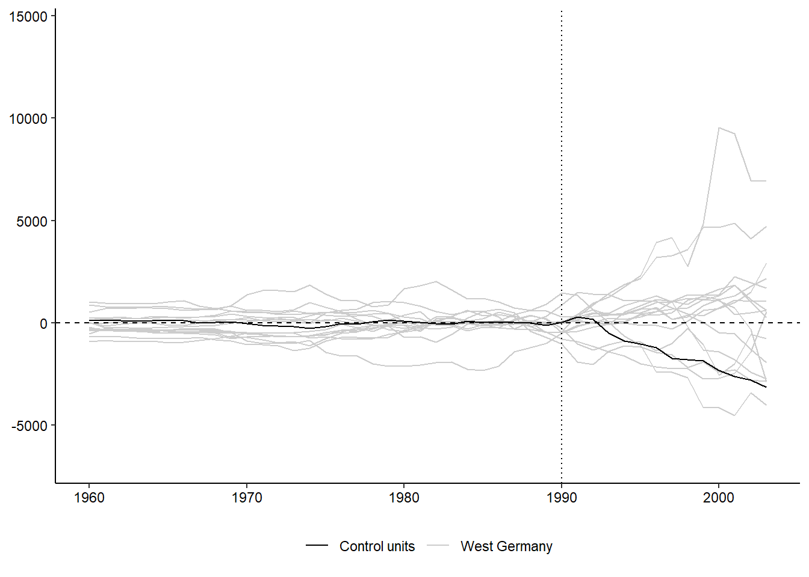
Näeme, et mõned teisedki riigid kogesid langust alates 1990ndatest. Samuti saame arvutada sekkumisjärgse MSPE ja sekkumiseelse MSPE suhte. Mida suurem on see erinevus, seda keerulisem on tulevikku prognoosida võrreldes minevikuga. Kui paljud riigid saavad suure suhte, võib meie hinnatud mõju olla lihtsalt juhuslik variatsioon.
mspe.plot(placebos)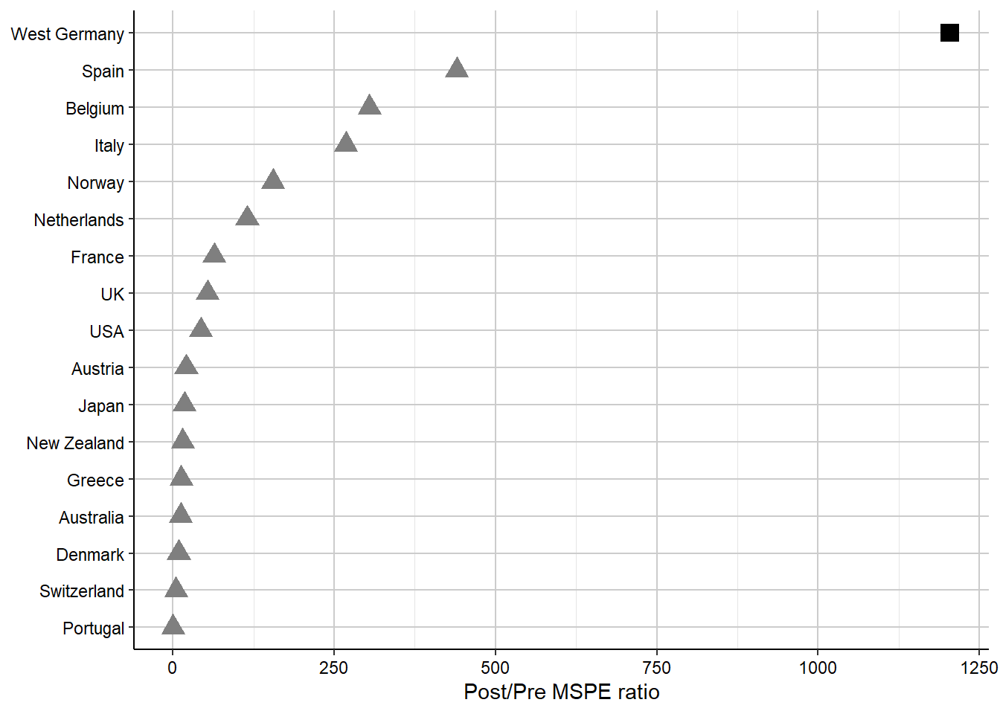
Mitte ühelgi riigil ei ole suuremat kasvu MSPEs.
P-väärtus käsuga
#or with the command
mspe.test(placebos)$p.val
[1] 0.05882353
$test
MSPE.ratios unit
1 43.3033763 USA
2 53.5923714 UK
3 20.4981909 Austria
4 304.7702747 Belgium
5 9.0819467 Denmark
6 64.0237928 France
7 268.0801045 Italy
8 115.0529812 Netherlands
9 154.9386997 Norway
10 4.6049413 Switzerland
11 17.8655078 Japan
12 12.8944227 Greece
13 0.3164758 Portugal
14 440.0365301 Spain
15 12.1328080 Australia
16 15.1841805 New Zealand
17 1204.5679685 West Germany12.8 Lisa - endale kontroll käsitsi
Näitame, kuidas leiame kaotuse sõltuvas muutujas käsitsi.
#Vaatame perioodi 1980-1990
time <- dataprep.out$tag$time.plot
pre_idx <- which(time> 1980 & time< 1991)
#Kontrolliks, et õiged aastad
time[pre_idx] [1] 1981 1982 1983 1984 1985 1986 1987 1988 1989 1990#Andmed enne meedet osalejal
Y1plot <- dataprep.out$Y1plot[pre_idx, ]
#Andmed enne meedet doonorrühmal
Y0plot <- dataprep.out$Y0plot[pre_idx, ]
#Kaalud, millega doonorrühma objektid kokku kaalume
w <- synth.out$solution.w
#Sünteetiline keskmine enne meedet
Y_synth_pre <- Y0plot %*% w
#Kontrolliks joonisele
plot(pre_idx, Y_synth_pre, type = "l")
#erinevus
gaps_pre <- Y1plot - Y_synth_pre
#Kontrolliks erinevus enne meedet
plot(pre_idx, gaps_pre, type = "l")
#Käsitsi kaotus Y-s
#erinevuste ruutude keskmine
lossV_manual <- mean(gaps_pre^2)
as.numeric(lossV_manual)[1] 2780.803#Tuli sama, mis meil eelenvalt
synth.tables$tab.loss Loss W Loss V
[1,] 0.0007521133 2780.80312.9 Lisa - California näide
Üks klassikaline sünteetilise kontrolli näide on California tubakakontrolli programmi – Proposition 99 – mõju analüüs. Tegemist oli 1988. aastal vastuvõetud seadusandliku paketiga, mis tõstis sigarettide aktsiisi 25 sendi võrra paki kohta ja suurendas makse ka teistele tubakatoodetele. Osa maksutulust suunati ulatusliku tubakakontrolli programmi rahastamiseks, mille eesmärk oli vähendada suitsetamist ning parandada rahvatervist.
Paneelandmestik sisaldab 39 USA osariigi andmeid perioodil 1970–2000. California puhul võeti 1988. aastat kui sekkumishetke, seega sekkumiseelne periood hõlmab aastaid 1970–1988. Sünteetiline kontroll konstrueeriti kaalutud kombinatsioonina teistest osariikidest, kus sarnane tubakakontrolli programm puudus. Sobitamisel kasutati mitmeid selgitavaid tunnuseid, näiteks elaniku kohta arvutatavat sissetulekut, sigarettide hinda, vanuselist struktuuri ning varasemate erimaksudega seotud näitajaid.
Kaalud selgitavad, kui suure panuse annab iga doonor-osariik sünteetilise California moodustamisse. Samuti määratakse tunnuste kaalud \(V\), mis peegeldavad, millised tunnused on prognoosivõime seisukohast kõige olulisemad.
#Lisa - California näide
smoking <- read.csv("https://kodu.ut.ee/~avork/files/oppetoo/micro/smoking.csv")
smoking$statetreated = ifelse(smoking$state ==3, 'California' , 'Rest')smoking |> ggplot(aes(x = year, y = cigsale, group = state, color = statetreated)) +
geom_line() +
scale_color_discrete(type = c("red", "grey")) +
labs(x = "", y = "Cigarette sales per capita", color = "") +
theme_light() +
geom_vline(xintercept = 1988)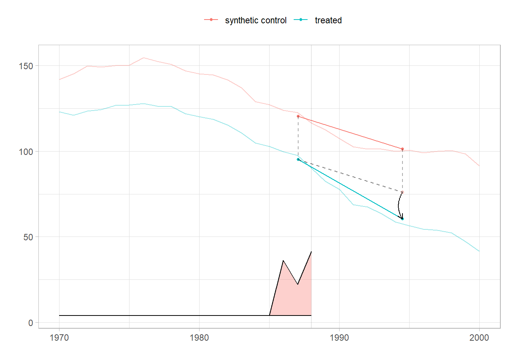
Võrdlusobjekti loomine
#Kontrollmuuutjad - beer 1984-1988; lnincome , retprice, age15to24 in 1980-1988; cigsale(1988) cigsale(1980) cigsale(1975)
dataprep.outsmoking <- dataprep(
foo = smoking,
unit.variable = c("state"),
unit.names.variable = c("statenames"), #
time.variable = c("year"),
treatment.identifier = 3,
controls.identifier = c(2,4:39),
dependent = c("cigsale"), #dependent variable
predictors= c("lnincome", "retprice", "age15to24"), #normal predictor
time.predictors.prior = c(1980:1988), #time for normal predictors
predictors.op = c("mean"), #operator on predictors
time.optimize.ssr = c(1980:1988), #time period to minimize difference between outcome of treated and synthetic control
special.predictors = list( list("beer",1984:1988,c("mean")),
list("cigsale",1988,c("mean")),
list("cigsale",1980,c("mean")),
list("cigsale",1975,c("mean"))),
time.plot = c(1970:2000) #time period for the dependant variable used for plotting
)
synth.outsmoking <- synth(dataprep.outsmoking)
X1, X0, Z1, Z0 all come directly from dataprep object.
****************
searching for synthetic control unit
****************
****************
****************
MSPE (LOSS V): 0.7306866
solution.v:
0.0007374446 0.09325666 0.2154788 0.002208443 0.3112402 0.3158565 0.06122201
solution.w:
0.0003504236 0.1594551 0.07993883 0.0002471579 0.00032375 2.42638e-05 0.00105249 0.0003608911 0.000835775 0.0008663009 0.0001242816 0.0005032623 0.000423793 1.10032e-05 0.0003526635 0.0004247837 0.2162101 0.001022373 0.1899719 5.09776e-05 0.001335066 0.0004477578 0.03734544 0.0004042441 0.001237563 0.0006020336 0.0002701525 0.0002872612 0.000796995 0.0003188573 0.0004313959 0.3004324 0.0003889967 0.0004293141 0.0004731813 0.000556126 0.001693177 synth.tablessmoking <- synth.tab(dataprep.res = dataprep.outsmoking,
synth.res = synth.outsmoking)Tabelid
#Võrdle tulemusi õpikuga
synth.tablessmoking$tab.pred
Treated Synthetic Sample Mean
lnincome 10.077 9.855 9.833
retprice 89.422 89.303 87.210
age15to24 0.174 0.174 0.172
special.beer.1984.1988 24.280 23.989 23.782
special.cigsale.1988 90.100 90.856 113.870
special.cigsale.1980 120.200 119.797 138.492
special.cigsale.1975 127.100 124.809 137.614
$tab.v
v.weights
lnincome 0.001
retprice 0.093
age15to24 0.215
special.beer.1984.1988 0.002
special.cigsale.1988 0.311
special.cigsale.1980 0.316
special.cigsale.1975 0.061
$tab.w
w.weights unit.names unit.numbers
2 0.000 Arkansas 2
4 0.159 Colorado 4
5 0.080 Connecticut 5
6 0.000 Delaware 6
7 0.000 Georgia 7
8 0.000 Idaho 8
9 0.001 Illinois 9
10 0.000 Indiana 10
11 0.001 Iowa 11
12 0.001 Kansas 12
13 0.000 Kentucky 13
14 0.001 Louisiana 14
15 0.000 Maine 15
16 0.000 Minnesota 16
17 0.000 Mississippi 17
18 0.000 Missouri 18
19 0.216 Montana 19
20 0.001 Nebraska 20
21 0.190 Nevada 21
22 0.000 New Hampshire 22
23 0.001 New Mexico 23
24 0.000 North Carolina 24
25 0.037 North Dakota 25
26 0.000 Ohio 26
27 0.001 Oklahoma 27
28 0.001 Pennsylvania 28
29 0.000 Rhode Island 29
30 0.000 South Carolina 30
31 0.001 South Dakota 31
32 0.000 Tennessee 32
33 0.000 Texas 33
34 0.300 Utah 34
35 0.000 Vermont 35
36 0.000 Virginia 36
37 0.000 West Virginia 37
38 0.001 Wisconsin 38
39 0.002 Wyoming 39
$tab.loss
Loss W Loss V
[1,] 0.002532345 0.7306866Joonis kujutab California sigarettide müüki elaniku kohta koos sünteetilise kontrolli müügiga. Sekkumiseelsel perioodil peaksid need kaks aegrida olema üksteisele väga lähedal, mis kinnitab sobituse headust. Pärast sekkumist ilmneb järkjärguline lahknemine, mis näitab tubakakontrolliprogrammi mõju.
path.plot(dataprep.res = dataprep.outsmoking,synth.res = synth.outsmoking)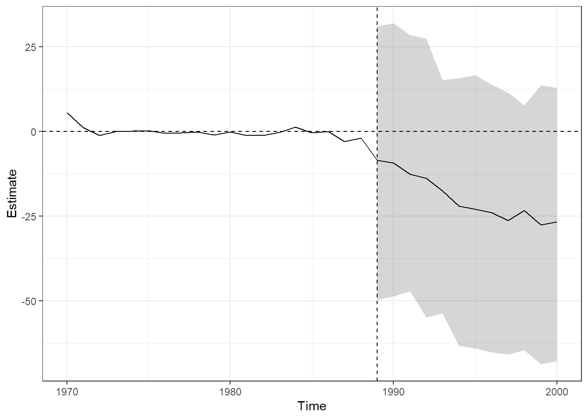
gaps.plot(dataprep.res = dataprep.outsmoking,synth.res = synth.outsmoking)
Mida järeldate?
Platseebo-test
(Aeglane)
placebos2 <- generate.placebos(dataprep.outsmoking, synth.outsmoking, Sigf.ipop = 3)plot_placebos(placebos2)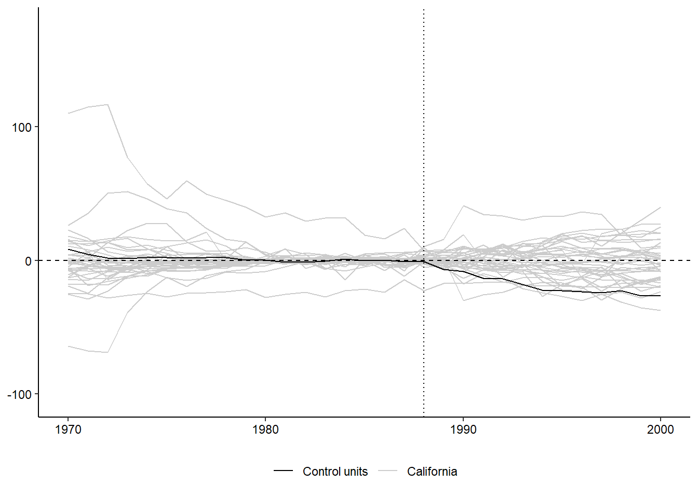
mspe.plot(placebos2)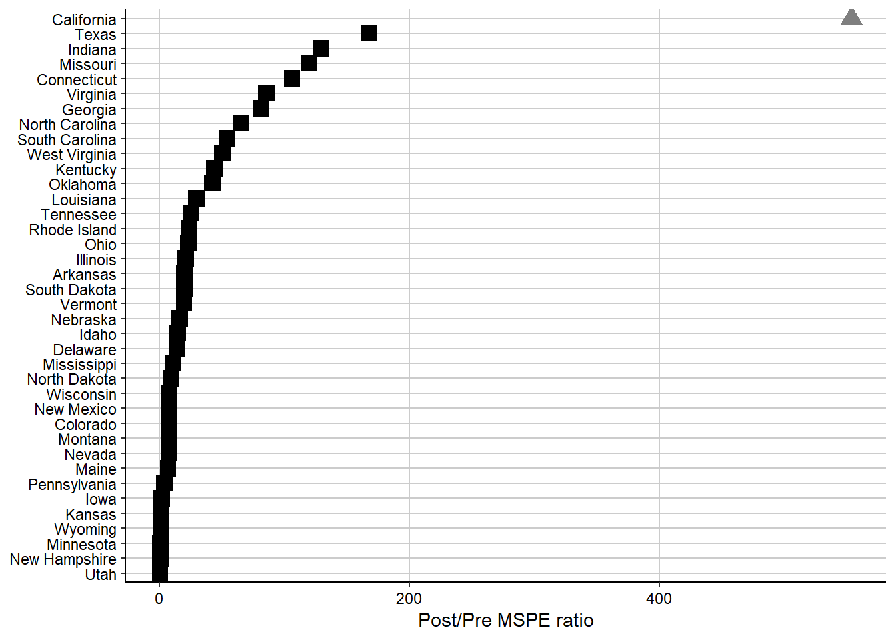
mspe.test(placebos2)$p.val
[1] 0.02631579
$test
MSPE.ratios unit
1 19.8670365 Arkansas
2 7.4736477 Colorado
3 105.8848040 Connecticut
4 14.1633996 Delaware
5 81.1890157 Georgia
6 14.6191595 Idaho
7 20.7253628 Illinois
8 129.3074386 Indiana
9 1.5467913 Iowa
10 1.3885515 Kansas
11 43.7604568 Kentucky
12 29.4431515 Louisiana
13 6.7324646 Maine
14 0.6062083 Minnesota
15 10.9924773 Mississippi
16 119.4847340 Missouri
17 7.4284741 Montana
18 15.9713426 Nebraska
19 7.2538272 Nevada
20 0.4366607 New Hampshire
21 7.5966576 New Mexico
22 64.9020923 North Carolina
23 9.2295776 North Dakota
24 23.0423483 Ohio
25 42.1877893 Oklahoma
26 3.9577161 Pennsylvania
27 23.7166534 Rhode Island
28 53.9919304 South Carolina
29 19.8055319 South Dakota
30 25.2168718 Tennessee
31 167.2380156 Texas
32 0.4013014 Utah
33 19.4952366 Vermont
34 85.2619974 Virginia
35 50.1698770 West Virginia
36 7.7260943 Wisconsin
37 1.0279284 Wyoming
38 553.5002249 CaliforniaMis on järeldus?